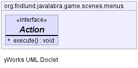

JavaScript is disabled on your browser.
Overview
Package
Class
Use
Tree
Deprecated
Index
Help
Prev Class
Next Class
Frames
No Frames
All Classes
Summary:
Nested |
Field |
Constr |
Method
Detail:
Field |
Constr |
Method
org.fridlund.javalabra.game.scenes.menus
Interface Action
public interface
Action
Simple action listener interface used in the menu system.

Method Summary
Methods
Modifier and Type
Method and Description
void
execute
()
Method Detail
execute
void execute()
Overview
Package
Class
Use
Tree
Deprecated
Index
Help
Prev Class
Next Class
Frames
No Frames
All Classes
Summary:
Nested |
Field |
Constr |
Method
Detail:
Field |
Constr |
Method